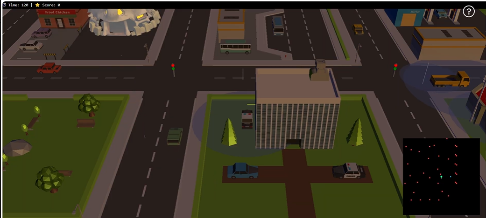
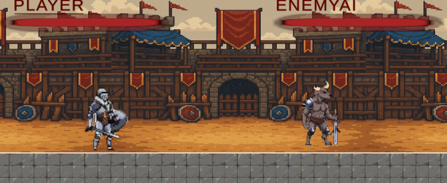
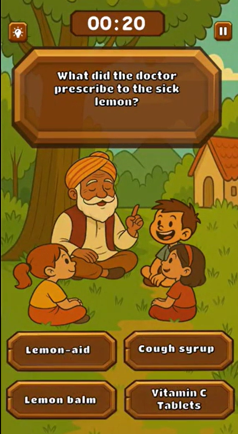
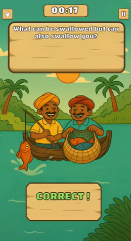
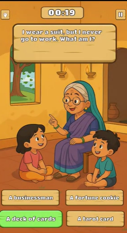
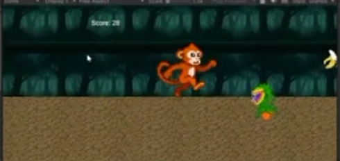

I build the Unity & C# systems that make a game feel right — combat states, difficulty curves, local multiplayer, WebGL delivery sims. Every mechanic here started as a design problem before it became a script. B.Tech CS @ KIIT-DU.
I come at design from the code side — every project below started as a question about how it should feel to play, and the engineering followed from that. Here's the thinking behind the four projects in the gallery.
Each project below includes the design problem behind it, not just the feature list — scroll into the dashed box on each card for the process.
A browser-based city delivery simulation developed at Vanara Games Studio. Dynamic traffic, timed deliveries, vehicle interactions, and a full scoring system — optimised for WebGL deployment.

A local multiplayer 2D fighting prototype with fully responsive controls, layered combat states, and modular scripting so animations and mechanics plug in cleanly.

A chapter-based narrative quiz game that blends interactive storytelling with puzzle mechanics. Each chapter unfolds through dialogue systems, progression checkpoints, and question-driven gameplay.



A 2D endless runner with procedural obstacle generation, audio management, and a clean modular codebase including Game Manager, Player Controller, and Autocenter scripts.

Open to gameplay programming and game design roles, internships, and graduate study in game development, HCI, or computer graphics. No active backlogs. Willing to relocate ♡